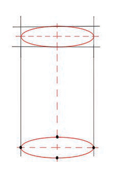
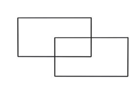
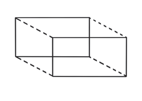
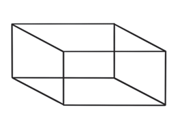

1

2

3
Figure 4: Steps to draw a cube
(iii)
For the rectangular cuboid, draw two overlapping rectangular shapes of the same size, except that one is slightly higher than the other as demonstrated in step 1 in Figure 5; and
(iv)
Connect the shapes by drawing four lines connecting the four corners of one shape with the four corners of the other shape as demonstrated in step 2 and 3.

1

2

3
Figure 5: Steps to draw a rectangular cuboid
Using shapes in drawing various objects
In drawing, shapes can be used to draw different images.
For example human beings and animals.
Drawing a human being
Drawing a human being's portrait using shapes is important to first understand the proportions of the body parts, which are the head, arms, chest, and legs.